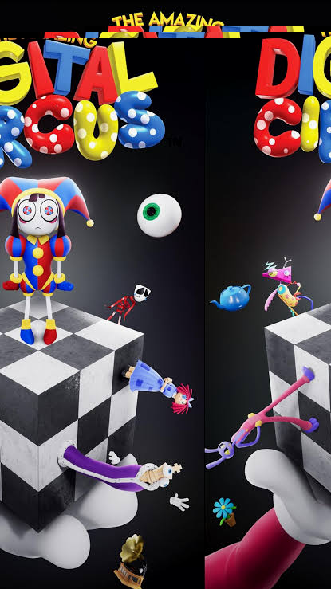

The Amazing Digital Circus is a colorful digital art project inspired by a strange virtual world. It shows different characters and places inside a digital circus. I used bright colors and fun designs to make the project feel exciting but also a little mysterious.
